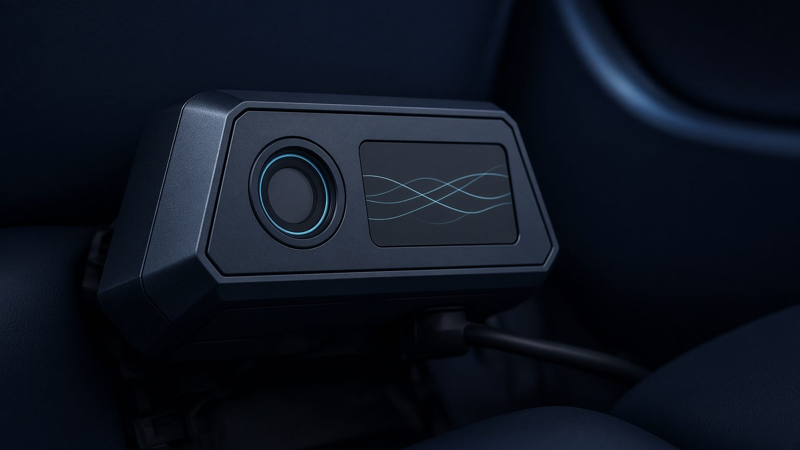

Custom systems
Purpose-built tools for the way things actually work.
Internal applications, interactive interfaces, control systems and custom workflows designed for one exact use case instead of forcing the customer into generic software.
Ideas × Code × Impact
Frank G and Cameron create bespoke digital, AI-driven and technical solutions for specific problems. No templates. No off-the-shelf thinking. Just focused systems built around the way you actually work.
Building smarter together
Position
We are not a web agency and we do not sell cloud hosting. We focus on individual solutions where software, AI, interfaces and process design need to work together.
We build what doesn’t exist yet.
What we solve
Purpose-built tools for the way things actually work.
Internal applications, interactive interfaces, control systems and custom workflows designed for one exact use case instead of forcing the customer into generic software.
Smarter processes.
Practical AI integrations, automation and data flows that remove repetitive work, reduce friction and make complex tasks easier to operate.
Digital meets real life.
Interactive and connected solutions that bridge digital workflows with the physical world when a project requires more than a standard screen.

Human × AI
Frank G brings the idea, the real-world understanding and the solution design. Cameron turns it into working software, systems and interfaces.
Human idea × AI implementation → real-world solution. Complementary partners — not a person using a tool.
Ideas × Code × Impact
Contact
If you have an idea, a workflow that needs fixing, or a technical challenge that does not fit into a standard box, that is exactly where the conversation gets interesting.